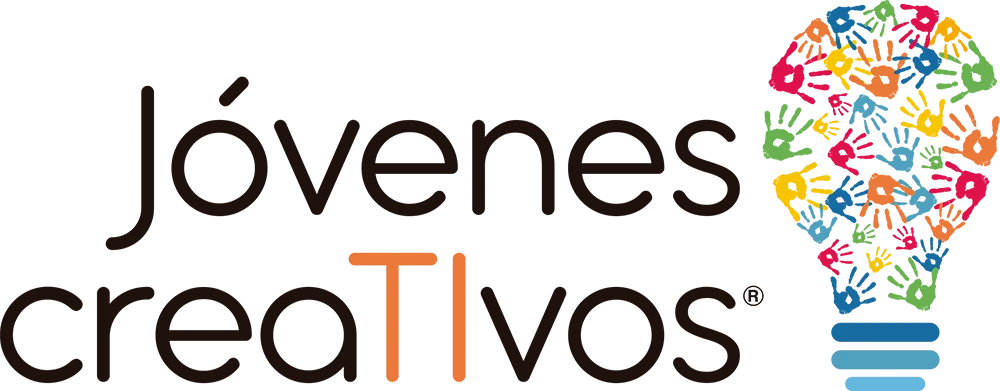
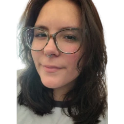

Conectar
Ser el vínculo entre los museos y quienes quieren visitarlos: docentes, instituciones y público en general.
Un proyecto para acercar la cultura a la comunidad.
Somos dos jóvenes colonienses que participamos del Programa Jóvenes creaTIvos de la Fundación ROFE.



Este proyecto nació de una problemática que identificamos en torno a la difusión cultural de nuestra ciudad: la información sobre museos, actividades y recursos educativos está dispersa y es difícil de encontrar. Decidimos aportar a la comunidad con este sitio, que busca conectar a las personas con las instituciones, las actividades y los recursos culturales disponibles.
Ser el vínculo entre los museos y quienes quieren visitarlos: docentes, instituciones y público en general.
Mostrar en un solo lugar las charlas, los recorridos, los talleres y las novedades de cada espacio.
Que anotarse a una charla o inscribirse a un taller sea simple y no dependa de saber a quién escribirle.


Si tenés un museo, una organización o una propuesta cultural, queremos conocerla.